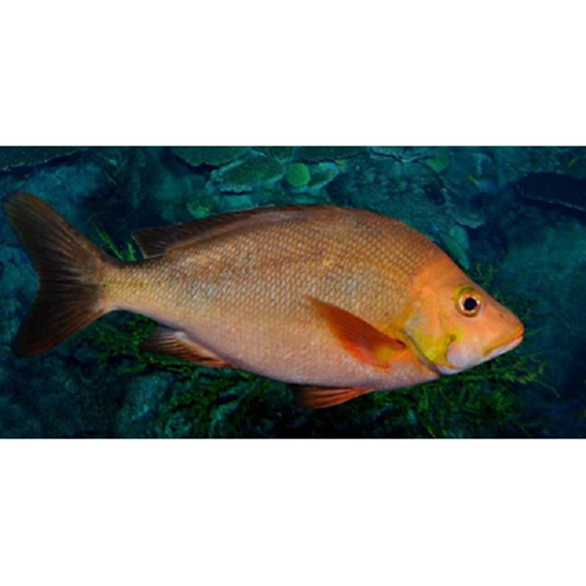

Ikan Kakap Merah
Ikan Kakap Merah termasuk golongan ikan demersal (ikan yang hidup pada dasar perairan) yang dapat hidup pada daerah perairan dangkal sampai laut dalam. Ikan kakap merah cukup banyak terdapat di perairan pantai diseluruh Indonesia dan mempunyai nilai ekonomis yang tinggi. Ikan kakap merah dapat dipasarkan dalam keadaan hidup dan keadaan mati. Dikalangan masyarakat ikan kakap merah sangat digemari karena rasa pada daging ikan ini enak, apalagi kalau ikan ini dibuat ikan pindang rasa ikan ini akan terasa nikmat sekali.
Ikan Kakap Merah adalah salah satu jenis ikan Kakap yang harganya cukup mahal, mencapai 60.000 hingga 180.000 rupiah per kg, tergantung kualitasnya. Meski tergolong sebagai varian Kakap yang terbanyak ditemukan di perairan Indonesia, ini tidak menjadikan harga ikan ini turun. Bahkan para pemancing pun hobi sekali menangkap ikan bersirip merah ini.Tahukah anda bahwa di balik kemolekan tubuh Ikan Kakap Merah, ternyata ia memiliki kandungan nutrisi yang amat baik? Berikut kami sajikan manfaat kesehatan dari nutrisi tersebut.
Kandungan Ikan Kakap Merah (dalam 100 gram)
| Protein (g) | Kalori (Kal) | Lemak (g) | Besi (mg) | Kalsium (mg) | Fosfor (mg) | Vit A (SI) | Vit B1 (mg) | Kolesterol (mg) | BDD (%) |
|---|---|---|---|---|---|---|---|---|---|
| 20 | 170 | 0,7 | 1 | 20 | 200 | 30 | 0,05 | 46 | 80 |
Manfaat Ikan Kakap Merah
- Mencegah Gigi Berlubang
- Merah untuk Mengobati Diabetes
- Menghindarkan Tubuh Dari Infeksi
- Mengobati Osteoporosis
- Mencegah kekurangan Vitamin A
Terkadang seseorang sudah rajin menggosok giginya, namun tetap saja giginya berlubang. Mengapa demikian? Ternyata karena tulang penyangga gigi dan gigi itu sendiri mudah keropos sehingga tertekan sedikit saja langsung patah. Kepatahan pada gigi bila dibiarkan saja akan memicu infeksi pulpa, sehingga gigi jadi berlubang makin lebar serta nyeri. Cara mencegah penyakit gigi berlubang karena kekurangan kalsium tentu saja dengan makan Ikan Kakap Merah.
Tubuh manusia memiliki kelenjar pankreas yang fungsinya untuk memproduksi hormon insulin. Bila kadar insulin rendah karena gangguan pankreas, maka seseorang akan terkena penyakit diabetes. Untuk mencegahnya bisa menggunakan Ikan Kakap Merah karena ikan ini dapat mengontrol hormon insulin supaya tidak kekurangan, juga tidak kelebihan.
Tubuh manusia memiliki mekanisme resistensi terhadap infeksi dengan diproduksinya antibodi oleh sel darah putih. Namun terkadang sel darah putih ini tidak bekerja maksimal sehingga tubuh terus-menerus terserang infeksi. Untuk mendukung kinerja sel darah putih dalam menghindarikan infeksi ini, ada baiknya anda mulai melakukan diet Ikan Kakap Merah.
Lagi-lagi masalah tulang. Osteoporosis itu artinya kepadatan tulang berkurang. Memicu patah tulang dan keropos. Dengan terapi Ikan Kakap Merah, anda bisa terhindar dari Osteoporosis. Tinggal niat anda saja ditegakkan, mau atau tidak makan ikan ini. Meski harus pergi ke pesisir untuk mendapatkan yang masih segar. Sebab ikan segar lebih kaya kalsium dibanding yang sudah masuk supermarket menjadi fillet dan beku..
Vitamin A tergolong jenis vitamin yang susah dicerna oleh tubuh karena tidak larut dalam air. Sehingga pemakaiannya harus dengan resep dokter. Kelebihan vitamin A dapat memicu gangguan hati atau liver. Vitamin A terbagi jadi 2 jenis, yaitu: Retinoid dan Beta Karoten. Pada Ikan Kakap Merah ditemukan keduanya, sehingga amat baik bila dikonsumsi. Kedua zat ini bisa mencegah miopi dan rabun senja.